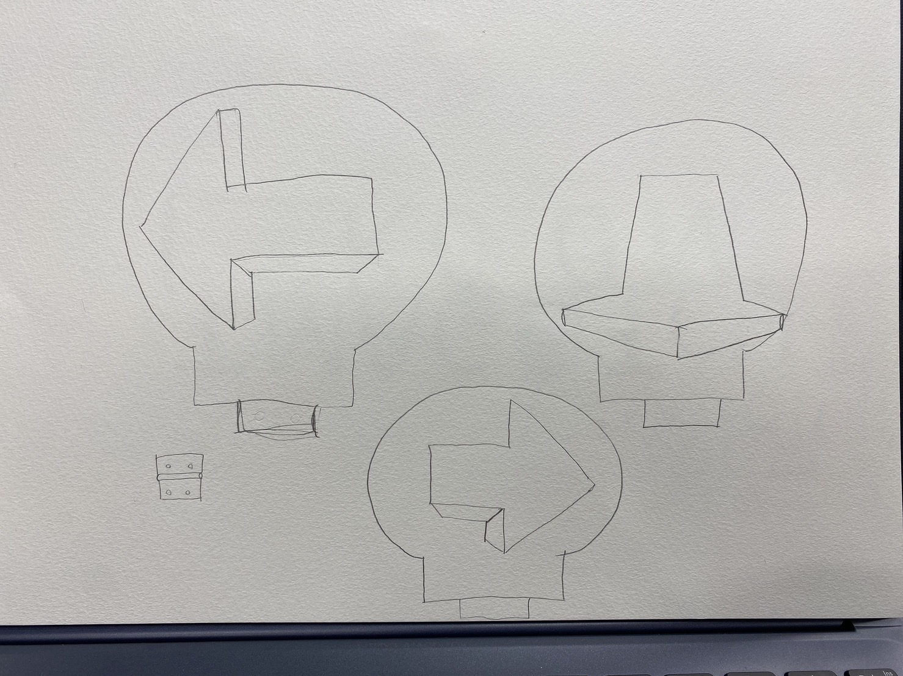
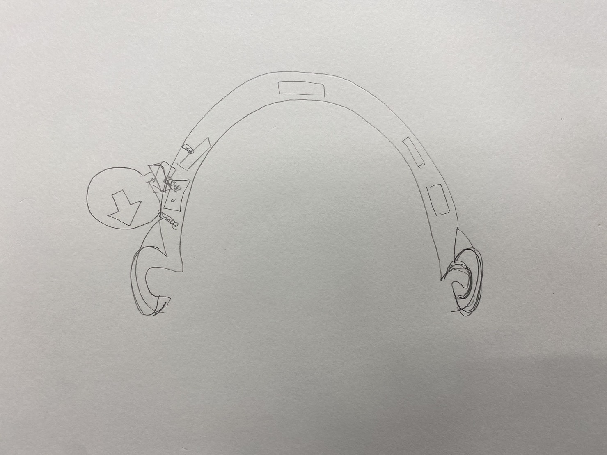
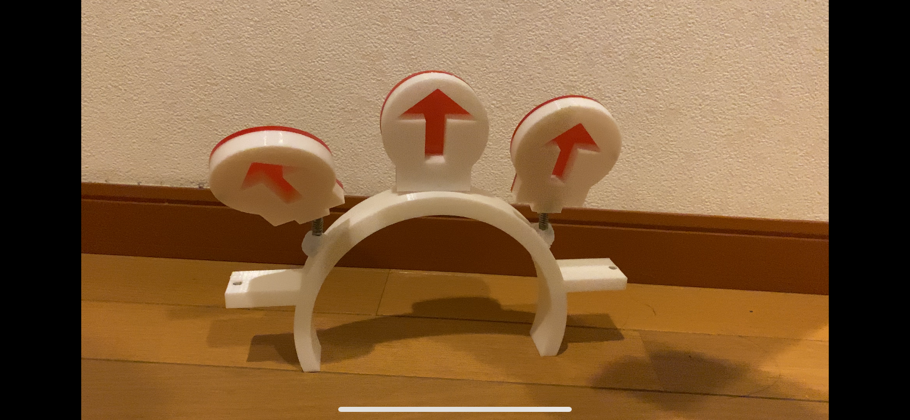
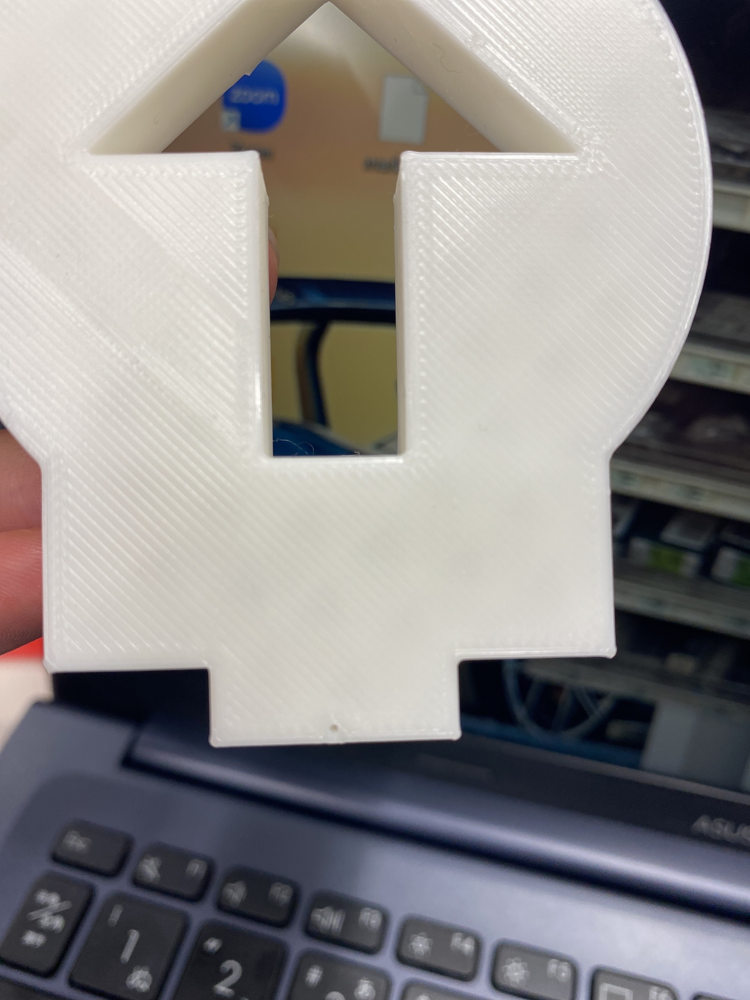
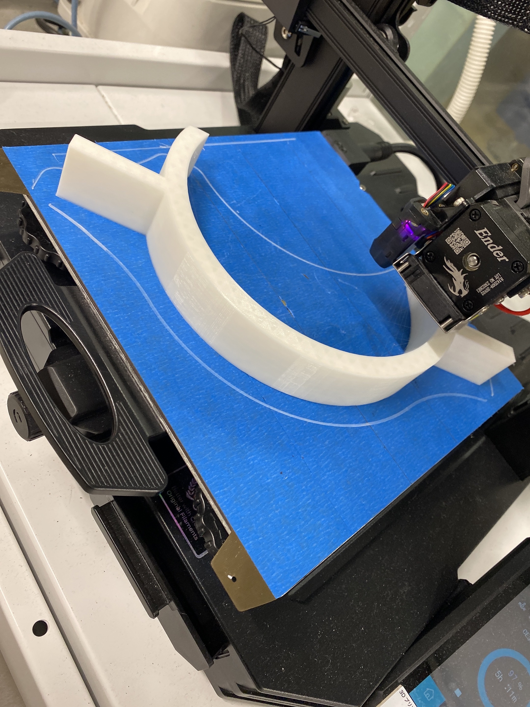
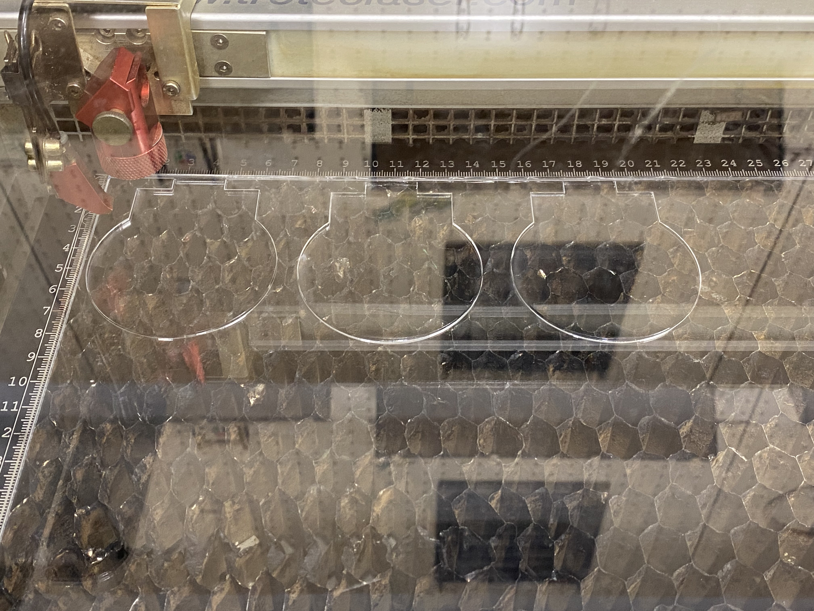
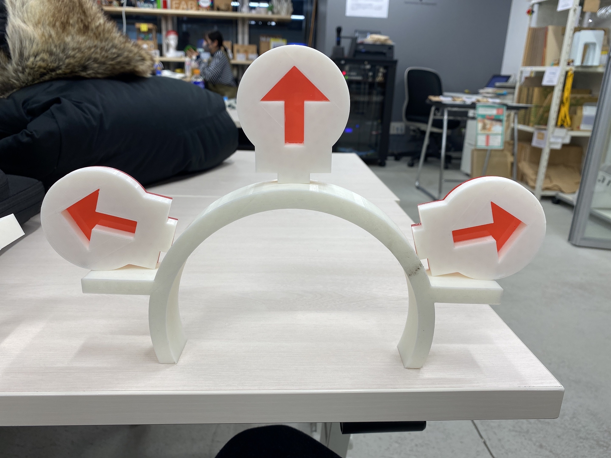
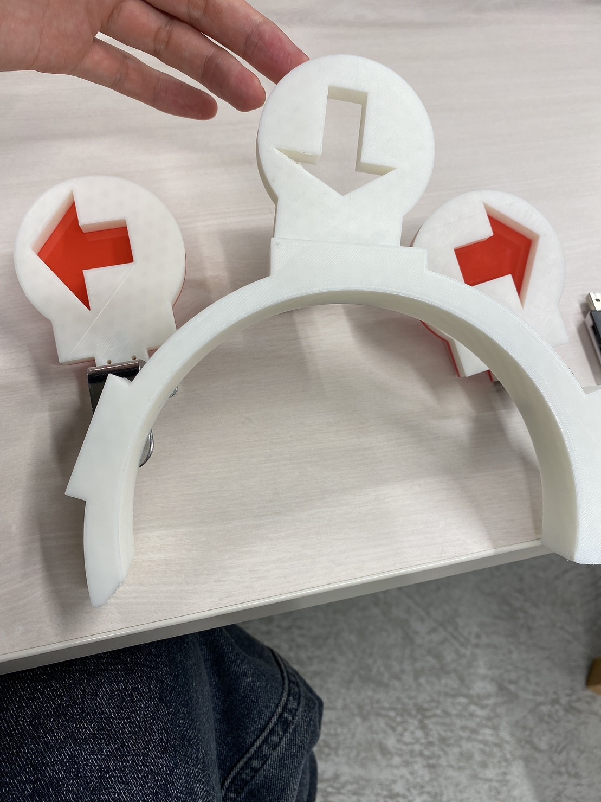
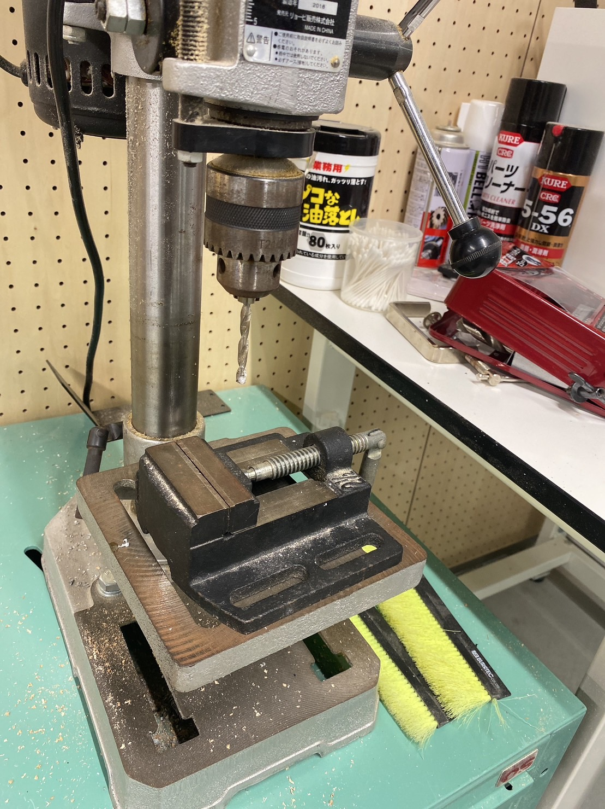
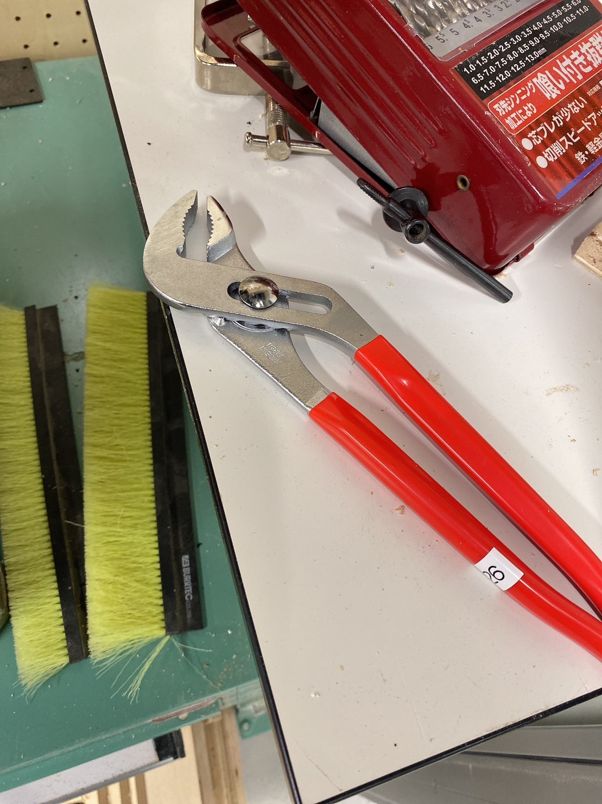

<!DOCTYPE html>
<html lang="jp">
<head>
    <!-- ⑥↓タイトルを変えてみよう -->
    <title>竜吾のサイト</title>
    <!-- ⑤スタイルシートの設定をしよう --> <link rel="stylesheet" href="./css/style.css">
    <!-- h1.htmlからある行をコピペしてくればOK -->
</head>
<body style="background-color: rgb(137, 217, 239);"><p style="color: rgb(255, 255, 255)55, 255, 255);"></p></body>

<h1><font color="red">作品名＜★自転車用ウィンカー★＞</font></h1>
<strong>普段バイトに行くのに使っている自転車で車に乗っている人になかなか意思表示ができなくて困っているときに思いついて作ることを決めました。</strong><br>

<h1><font color="red">＜構想段階での下書き＞</font></h1>



<br>
<h1><font color="red">＜完成作品＞</font></h1><br>
<br>
<a href="https://youtube.com/shorts/8PKX5zx4wdY?feature=shared" target="_blank"><strong><font color="red">使用動画</font></strong></a><br>

<br>
<br>

3Dプリンターで矢印の形と耳の形を作り次のように組み合わせます、そこにUVプリンターで作った赤矢印を取り付けます。
<br>

<br>

<a href="https://youtube.com/shorts/GoEyWLdvkFY?feature=shared" target="_blank">UVプリンター「タイムラプス」</a><br>
このように、UVプリンターで赤を色づけた後白を重ね塗りしています。そうすることで、裏から見たとき赤がきれいに映ります。


<h1><font color="red">＜プロトタイピング＞</font></h1>
<br>
矢印を動かしたときに、下に向いてしまうので失敗になりました<br>
それを踏まえたうえで完成形では、すべてを上向きにし、矢印が倒れたときに矢印の先が横を向くようにしました。<br>


<h1><font color="red">＜使用機材＞</font></h1>

    <a href="https://fabble.cc/fablabminatomirai/graphtecxce6000x40" taget="_blank">UVプリンター、</a>
    <a href="https://youtu.be/J98rkpT-9jk?feature=shared" target="_blank">レーザーカット、</a>
    3Dプリンター、ボール盤↓、ペンチ↓<br>

    <br>
    使用動画を見ていただければわかるように、磁石でつくようになっています<br>
    このようにするため、ボール盤で穴をあけ、そこに磁石を埋めるために、ペンチをつかって圧入という作業をしました。
    <h1><font color="red">＜反省点＞</font></h1>
    <ul><li>ばねが弱い</li><li>磁石が強い</li><li>矢印が重い</li></ul><br>
    これらすべての要素があることで矢印がかってに下がってしまう。<br>
    また、矢印とばね、矢印と頭の部品をつけるのにグルーガンを使いましたがかなり苦戦しました。<br>
    設計の段階で長さや大きさを明確にしておく必要があった。

    
</body>
<title>ryuugoのサイト</title>
</html>